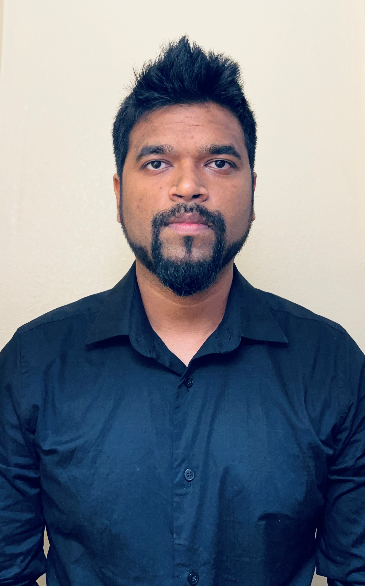

Hiteshkumar Patel
Email ID :- hitesh.it2@gmail.com
Phone No :- +12242410208
Location :- Carrolton GA (current city)
Ready to relocate

Summary
It service technician engineer with extensive experience in computer hardware and
software support and administration. 4+ years of experience within windows, active directory, citrix, Vmware,
IIS.Seeking a position with a company, to put forth my experience and can help improve the company and their business.
Skills
Troubleshooting and installing Windows 7,8,8.1,10, Migration , Active Directory , Windows Server, Virtualization , DHCP , DNS , VMware, Linux , AWS ,Azure .
Computer Hardware and software (more than 4 years), Computer repair (more than 4 years) , Citrix (less than 1 years), VMware (3 years), System Administration (3 years), IIS (5 years), Active Directory (3+ years), Windows (4+ years).
Operating Systems: Windows xp, Windows 7, Windows 8,8.1, Windows 10. Windows Server: 2000/2003, 2008 & 2012, Antivirus server
Work Experience
Desktop Support Technician
Chubb – Alpharetta GA
July 2022 – Till data.
- Remote/on-site desktop support technician.
- Image new laptops for new users.
- Maintain users in active directory and configure group policy accordingly.
- Installed software’s from SCCM.
- Setup, configure, install and support all PC equipment and peripherals.
- Performing software updates, software installation, hardware evaluation, and hardware replacement.
- Printer installation, replacement, and maintenance.
- Software/hardware: install configure & maintenance.
- Installing software as needed like sap, Citrix Client and troubleshoot as well.
- Solving issues like DHCP, DNS and provide remote support if needed.
- Troubleshoot and resolve Computer and network related problems remotely as well as on site.
- Password reset and giving access to network drive from server.
- Solving remote issues using Cisco WebEx remote connection.
- Worked with Service Now ticketing tool solving on average 10 -15 tickets on daily bases.
- Maintain and update hardware inventory on Service Now.
- Maintaining office 365 licenses and give access to shared mailbox.
- Troubleshooting Microsoft Office 365 issues.
- Taking backup when user leave’s the organization.
IT Support Technician
Kraft Heinz - Chicago IL
Oct 2018 to Feb 2022
- Image new laptops for new users.
- Provide IT services such as: Computer Repair and Maintenance. Windows 7/Windows 10
- Repair and reconfigure computers.
- Setup, configure, install and support all PC equipment and peripherals
- Performing software updates, software installation, hardware evaluation, and hardware replacement.
- Printer installation, replacement, and maintenance
- Remote/on-site desktop support
- Software/hardware: install configure & maintenance,
- Installing software as needed like sap, Citrix Client and troubleshoot as well.
- Solving issues like DHCP, DNS and provide remote support if needed.
- Troubleshoot and resolve Computer and network related problems.
- Worked with Service Now ticketing tool solving on average 10 -15 tickets on daily bases.
- Give resolutions on hardware and software related issues.
- Maintain and update hardware inventory.
- Maintain users in active directory and configure group policy accordingly.
- Password reset and giving access to network drive from server.
- Create new users in active directory.
- Managing and creating email id in office 365 admin console.
- Maintaining office 365 licenses and give access to shared mailbox.
- Configure office 365 account for new users.
- Troubleshoot on network issue like LAN WI-FI and DHCP issues.
- Troubleshooting Microsoft Outlook issues.
- Monitoring desktop, laptop, network printers and scanner etc.
Education
Bachelor of Commerce – JNU University.
Completed MCP & MCSA (2018)- from CMS institute. Completed GNIIT.
Completed Microsoft certification in SQL server 2008. Completed AWS, Azure.
Contact me